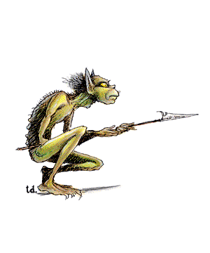

Tasloi

CLIMATE/TERRAIN:
| Tropical/Jungles
|
FREQUENCY:
| Rare
|
ORGANIZATION:
| Tribal
|
ACTIVITY CYCLE:
| Night
|
DIET:
| Omnivore
|
INTELLIGENCE:
| Low to average (5-10)
|
TREASURE:
| Q (x5)
|
ALIGNMENT:
| Chaotic evil
|
NO. APPEARING:
| 10-100
|
ARMOR CLASS:
| 5 (6)
|
MOVEMENT:
| 9, Cl 15
|
HIT DICE:
| 1
|
THAC0:
| 19
|
NO. OF ATTACKS:
| 2 or 1
|
DAMAGE/ATTACK:
| -3/1-3 or by weapon type
|
SPECIAL ATTACKS:
| Surprise
|
SPECIAL DEFENSES:
| Nil
|
MAGIC RESISTANCE:
| Nil
|
SIZE:
| S (2'-3' tall)
|
MORALE:
| Average (10)
|
XP VALUE:
| Normal: 35
|
| Chieftain: 270
|
| Shaman: 420
|
Tasloi are long-legged, flat-headed humanoids. They walk in a crouching
posture, touching their knuckles to the ground from time to time. Their skins are a
lustrous green and are thinly covered with coarse black hair. Their eyes are
similar to a cat's and are gold in color.
Often they can be heard at night, speaking in their high, whispery voices.
Tasloi speak their own tongue and can also speak the languages of monkeys and
apes. About 5% of their kind have learned a pidgin common that they use when
trading.
Combat: Tasloi like to hide in tree tops and drop down on the weak and unwary. They
are quick and nimble in the trees, but slow and clumsy on the ground. When they
are in jungle, their stealthy movements impose a -4 penalty to opponents'
surprise rolls. They also hide in shadows, like a thief, with 75% effectiveness.
Their infravision enables them to see up to 90 feet in darkness, but they hate
daylight and suffer a -1 penalty to their attack roll when fighting in broad
daylight.
Tasloi carry the following weapons: small shield (AC 5) and javelin -- 20%,
club and javelin -- 40%, short sword and small shield (AC 5) -- 10%, javelin and
net -- 15%, short sword and net -- 10%, or javelin and lasso -- 5%. Tasloi
without shields are AC 6. They customarily carry all javelins and shields on their
backs when they travel through the trees.
Tasloi eat anything, but they enjoy all kinds of flesh, especially humans and
elves. They normally attack from above, trying to capture if possible. If they
gain surprise, they use their 10-foot-diameter nets to trap their prey (the
nets totally entangle those of less than 15 Strength; those of 15 or greater
Strength need a successful open doors roll to rip the net and escape). If a party is
too vigilant or prepared, the tasloi attempt to wear down the group through
short, sudden attacks followed by retreat. If possible, tasloi try to steal the
enemy's dead after an attack.
Habitat/Society: The tasloi live in loosely-structured bands of several families. In every band
of 70 or more, there is a chief of 5 Hit Dice. There is a 30% chance that any
band has a shaman. Tasloi shamans may advance up to 5th level.
When found in their lair, in addition to the males, there are females and
young equal to 70% and 50% of the number of males, respectively. Females fight as
males, but the young do not fight at all. The lair consists of a series of 1d6
large trees with 4d6 platforms 50-100 feet above the ground. All the trees are
connected by vines and ropes. There is a 60% chance that the tasloi have 1d6
trained giant spiders and a 20% chance that they have 2d4 trained giant wasps. Tasloi are able to ride these wasps for great distances, and the spiders aid
in the construction, protection, and overall maintenance of the tree-village.
Ecology: It is not known where and how tasloi originated. It is likely they have been
around for many millennia, interbreeding in deep isolated jungles. Their
primitive lifestyle has probably existed in much the same fashion for thousands upon
thousands of years.
While certainly among the least fearsome of all jungle creatures, tasloi are
perhaps worth worrying about in numbers, or after fleeing encounters with
nastier jungle denizens. Tasloi know the location of such lairs and often set up
obvious escape routes for any creature that foolishly finds itself confronting the
beast. The tasloi then lay their traps along the escape path and wait for the
weakened, unsuspecting creatures to run through blindly. This strategy is highly
successful, apparently, as the tasloi boast many more trophies than their
small size and limited prowess might otherwise indicate.
Index